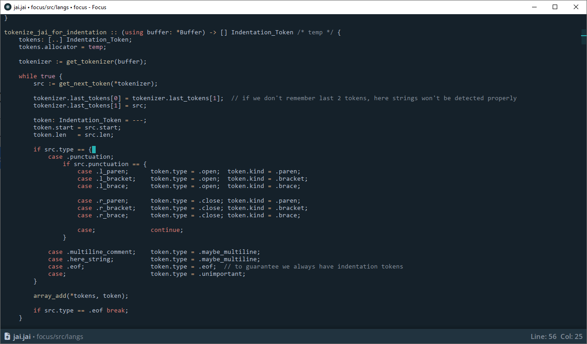
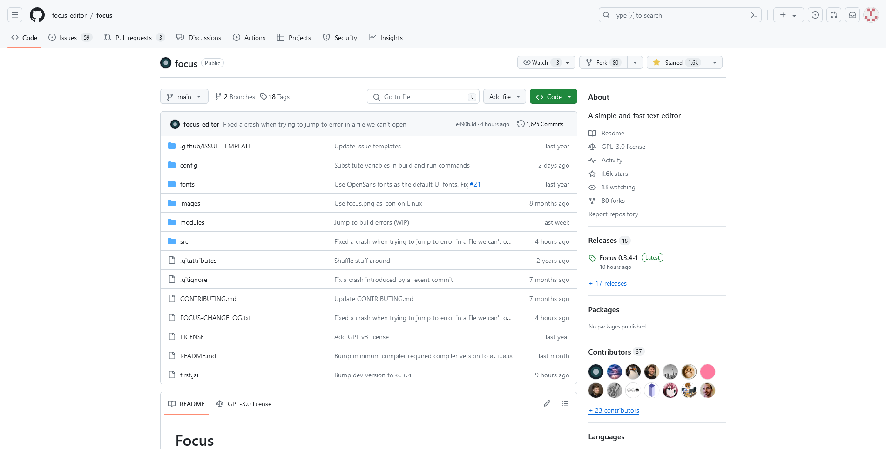

Focus Editor Beta
A simple editor whose goal is to stand out of your way and let you do work. It's designed for people who value simplicity, are sensitive to input latency, and do not require heavy language support in their editor.
Nightly Builds - built every 4 hours from the main branch

Simple and fast
Focus deliberately doesn't include a lot of features, and its source code should be simple enough for people to easily add features to it if they want to.
We try to minimize input latency and maximize responsiveness. We also include relatively fast project search, which should work well for reasonably sized projects.

Easy to configure
Focus is configured via simple text files.
Settings can be configured globally, or per-project.
A project in this editor is just another config file that lives in the editor's projects directory and which you can switch to quickly, immediately applying all the settings from that file.
[[workspace]]
/path/to/dir1
/path/to/dir2
[[settings]]
maximize_on_start: false
open_on_the_biggest_monitor: true
...
[[build commands]]
build_working_dir: build working dir for all commands
open_panel_on_build: true
error_regex: [compiler-specific error regex]
auto_jump_to_error: false
[Debug Build And Run] # command name. Can be arbitrary
build_command: jai main.jai
build_working_dir: working dir for this command only
timeout_in_seconds: 5
run_command: test.exe
Development and Community
Focus is written in the Jai programming language developed by Jonathan Blow. The editor is open-source and is currently in active development.
We gratefully welcome contributions, however you have to have access to Jai, which is currently in closed beta. Please read the contributing guidelines before starting any significant piece of work.
